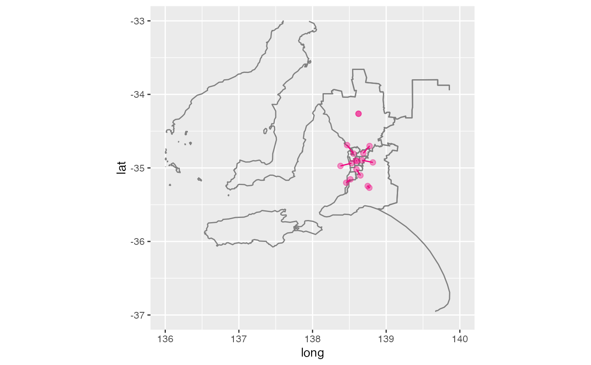

The dorling algorithm creates a non-contiguous cartogram by shifting circles to alleviate overlap, while roughly maintaining geographic proximity.
aec_carto_f(aec_data_sub, polygon.vertex = 6, name.text = TRUE, dist.ratio = dist.ratio, iteration = 100, xlab = "", ylab = "", ...)
Arguments
| aec_data_sub | subset of data with centroids of electoral divisions |
|---|---|
| polygon.vertex | The number of vertice of the circle. Default to be 100. If polygon.vertex=4 then diamonds applies. If polygon.vertex=6, then hexagon applies. |
| name.text | whether to print the region names on the circles or polygons. |
| dist.ratio | The threshold to determine whether an attract force is added. It is applied to the ratio of the distance between two centroids and the sum of the two radii. |
| iteration | The limit of the number of iterations. Default to be 9999. |
| xlab | Label for dorling x axis, intermediate drawing |
| ylab | Label for dorling y axis, intermediate drawing |
| ... | arguments to dorling function |
Examples
library(dplyr) library(ggplot2) data(nat_map16) data(nat_data16) nat_data16 <- nat_data16 %>% select(-c(x,y)) # remove existing cartogram coordinates adelaide <- aec_extract_f(nat_data16, ctr=c(138.6, -34.9), expand=c(2,3)) adelaide_carto <- aec_carto_f(adelaide) %>% rename(id=region)ggplot(data=nat_map16) + geom_path(aes(x=long, y=lat, group=group, order=order), colour="grey50") + geom_point(data=adelaide_carto, aes(x=x, y=y), size=4, alpha=0.4, colour="#f0027f") + xlim(c(136, 140)) + ylim(-36, -33) + coord_equal()#> Warning: Ignoring unknown aesthetics: order#> Warning: Removed 35868 rows containing missing values (geom_path).#> Warning: Removed 1 rows containing missing values (geom_point).adelaide_all <- merge(adelaide, adelaide_carto, by="id") ggplot(data=nat_map16) + geom_path(aes(x=long, y=lat, group=group, order=order), colour="grey50") + geom_point(data=adelaide_all, aes(x=long_c, y=lat_c), size=2, alpha=0.4, colour="#f0027f") + geom_point(data=adelaide_all, aes(x=x, y=y), size=2, alpha=0.4, colour="#f0027f") + geom_segment(data=adelaide_all, aes(x=long_c, xend=x, y=lat_c, yend=y), colour="#f0027f") + xlim(c(136, 140)) + ylim(-37, -33) + coord_equal()#> Warning: Ignoring unknown aesthetics: order#> Warning: Removed 35855 rows containing missing values (geom_path).#> Warning: Removed 1 rows containing missing values (geom_point).#> Warning: Removed 1 rows containing missing values (geom_point).#> Warning: Removed 1 rows containing missing values (geom_segment).